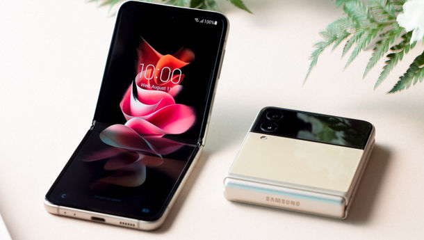
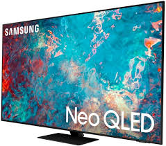

Harga: Rp.28.000.000
Spesifikasi:
OS: Windows 10 Home / Pro4
Display: 13.3" FHD TFT LCD Display dengan Touch Screen Panel
Dimensi: 305,2 x 203,2 x 6,2 ~ 11.8 mm
Berat: 950 gram
CPU: Intel Core dengan Intel Hybrid Technology
Graphic: Intel UHD Graphics
Memori: 8GB RAM (LPDDR4x)
Storage: 256/512GB eUFS, MicroSD slot (up to 1TB)
Kamera: 1MP
Baterai: 42Wh (typical5)
Konektivitas: Wi-Fi 6 (Gig+) 802.11 ax 2�2, LTE6 (Cat 16), Bluetooth v 5.0
Port: 2 USB-C�, 1 Headphone out/Mic-in Combo, MicroSD Multi-media Card Reader
Sensor: Fingerprint Sensor, Ambient Light Sensor (Keyboard Backlit on/off), Hall Sensor, Windows Hello sign in with fingerprint
Audio: Quad Stereo Speakers: Sound by AKG; Immersive sound with Dolby Atmos technology

Harga: Rp.24.000.000
Spesfikasi:
Layar depan: 1,9 inch Super AMOLED 260 x 512 pixel
Layar utama: 6,7 inch Dynamic AMOLED 2X, refresh rate adaptive 120 Hz. rasio 22:9, Ininity Flex Display dengan rasio 2640 x 1080 pixel
Dimensi ketika tertutup: 72,2 x 86,4 x 17.1~15,9mm
Dimensi ketika dibuka: 72,2 x 166 x 6,9 mm
Berat: 183 gram
Chipset: Snapdragon 888
RAM: LPDDR5 8 GB
ROM: UFS 3.1 128 GB / 256 GB
Kamera luar: 12 MP (wide) dan 12 MP (ultra-wide)
Kamera dalam: 10 MP
Network: 5G, 4G, WiFi 6, Bluetooth
Fitur: Fingerprint di tombol power, tahan Air
Baterai 3.300 mAh

Harga: Rp.30.000.000
Spesifikasi:
Ukuran : 65 Inch
Resolusi : 3840 x 2160
Picture Engine: Neo Quantum Processor 4K
Quantum Matrix Technology
Quantum HDR 24X
Object Tracking Sound
Motion Xcelerator Turbo+
Konektivitas: HDMI; USB; Wi-Fi; Bluetooth
65 Inch Neo QLED 4K Smart TV
| | |